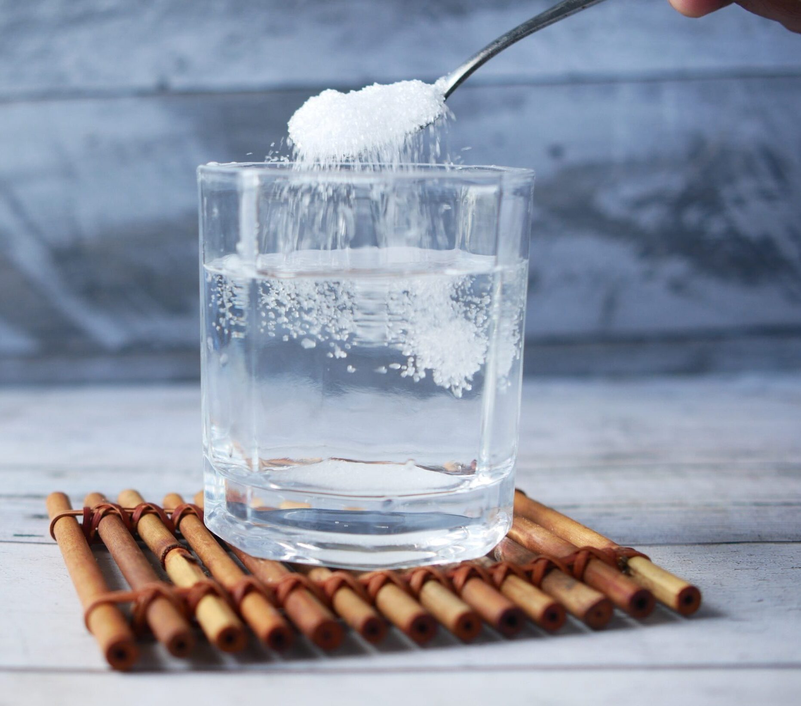

Home Page
Sugar Water

Description
This is simple 4-step recipe to creating sugar water.
Ingredients
- Drinking Water
- White Sugar
- Measuring Cup
- Measuring Spoon (Teaspoon)
- Stirring Spoon
Steps
- Fill Measuring Cup with 8 ounces of Drinking Water.
- Use Measuring Spoon to measure 1 Teaspoon of White Sugar.
- Pour White Sugar into the Measuring Cup containing Drinking Water and Stir until dissolved.
- Use Sugar Water according to task's needs.